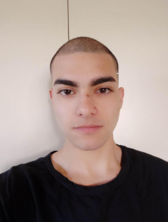

Francesco Plutino
Mi chiamo Francesco ho 23 anni e sono di Reggio Calabria. Ho conseguito il diploma come Perito
informatico
nel 2017 e negli anni a venire mi sono appassionato sempre di più al come fossero creati i software,
e a quali potenzialità e pericoli si potessero celare all'interno. Ho studiato per 6 mesi in un istituto
professionale conseguendo la qualifica di Responsabile della sicurezza di reti informatiche e della
protezione dei dati, e per altri 4 mesi ho affrontato uno stage in un'azienda di sicurezza delle reti e
dati dove mi sono
interessato ancora di più alla programmazione.
Autonomia
Autostima
Adattamento
Pianificazione
Precisione
Intraprendenza
Problem solving
Lavoro di gruppo
8
7
8
9
9
7
10
7
Lista di competenze acquisite:
- Critical thinking
- Problem Solving
- Ottima padronanza della lingua Inglese
Lista Certificazioni
- ECDL
- Cambridge First Certificate English
- Cisco Networking Academy Course It Essentials
Piani Futuri
Alla fine di questo boot camp ho intenzione, nel mio tempo libero, di concentrarmi sull'accrescere le
mie
competenze di programmazione aggiungendo altri linguaggi al mio arsenale e approfondire i miei studi nel
campo della cyber security.
Sono sempre stato interessato al mondo dell'informatica, grazie alla mia natura caparbia e curiosa ho
sempre cercato di migliorare e perfezionare il modo in cui faccio le cose.
Il campo dell'informatica e la programmazione in particolare mi permette di sfruttare la mia curiosità e
la mia ostinazione per dare un contributo significativo al progetto o qualunque obbiettivo io mi ponga.